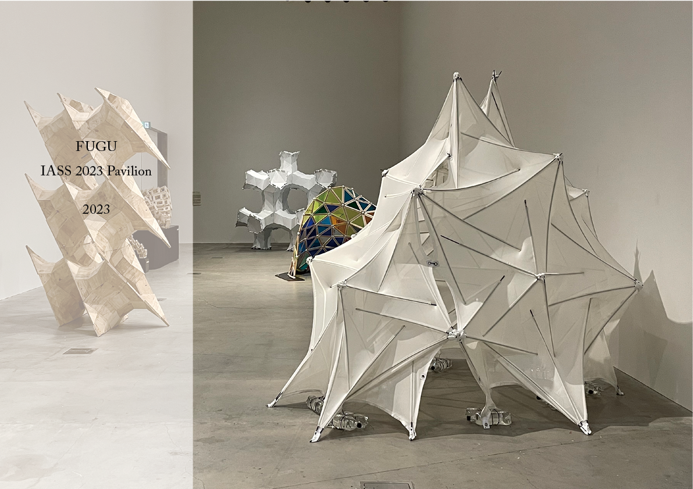
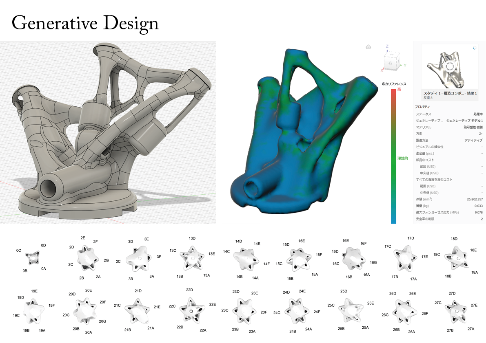
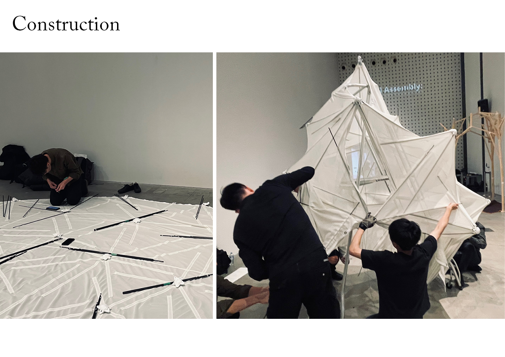
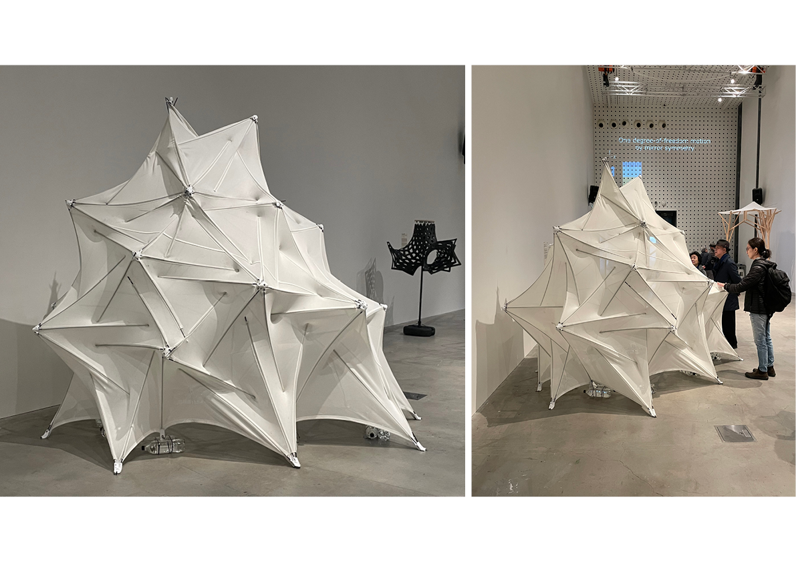
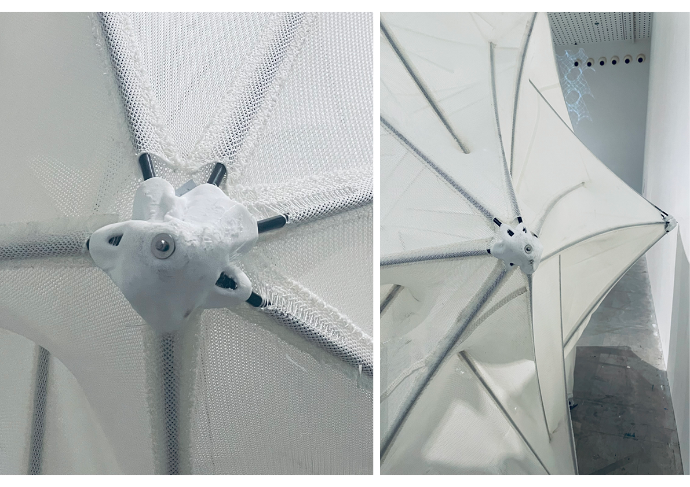
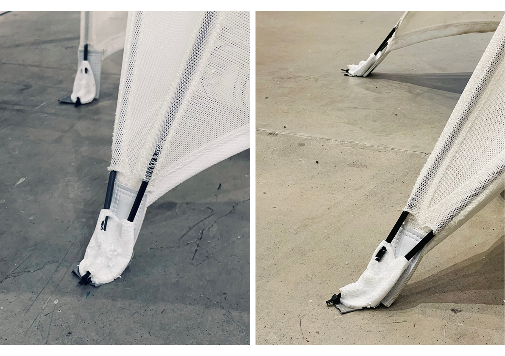

- 
- 
- 
- 
- 
- 
2023年7月にメルボルンで開催されたIASS 2023 Pavilion Competitionのためのパビリオンを制作した。このパビリオンのジョイントはジェネレイティブデザインを用いて設計することで、重量およびプリンティングタイムを前作よりも半分以下に削減した。この有機的な形状のジョイントを用いて不定形の膜テンセグリティ構造を立ち上げることで、3m×3m×2.5mの構造体が完成した。このパビリオンはスーツケースに入るサイズに分解して日本に持ち帰り、つながるかたち展03で再展示を行った。
project
FUGU IASS Pavilion 2023
term
Apr. 2023 - Jul. 2023
type
Pavilion
credit
Yuta Shimoda, Sei Hayashi, Hiroki Awaji, Taichi Nakamura, Haruto Kamijo, Tomoyuki Gondo, Jun Sato
Joint Design: Hiroki Awaji
Membrane Fabrication: Taiyo Kogyo Corporation